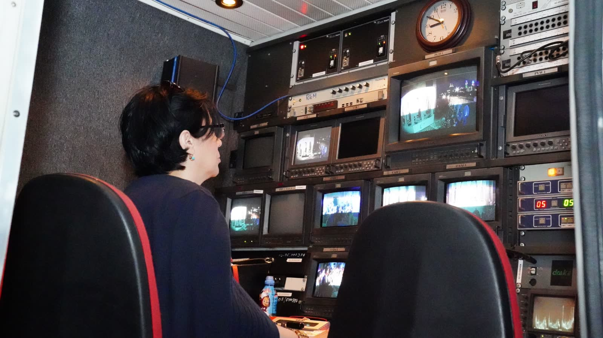
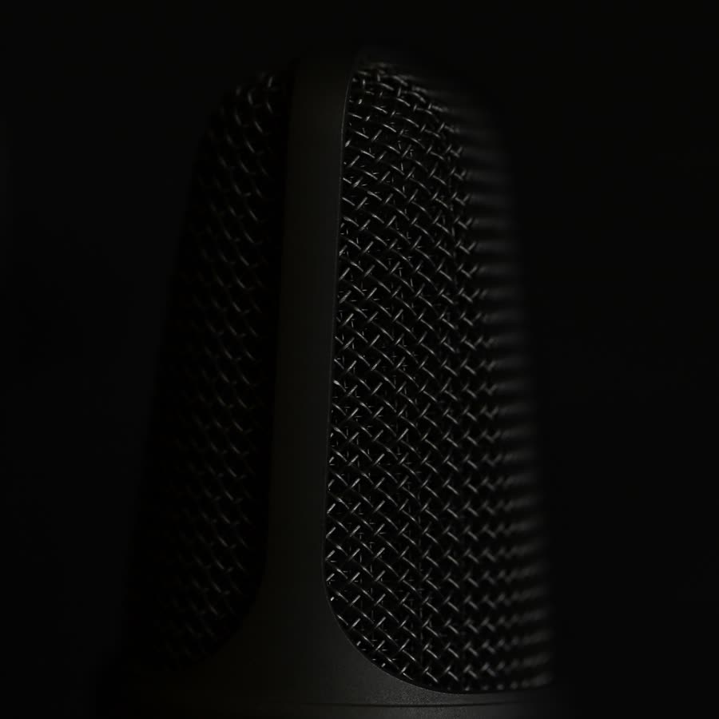

Radio online y portal de noticias las 24 horas, desde Salta para todo el país. La información de hoy, contada cerca tuyo.
Acompañamos todo el día. El programa al aire se marca solo según la hora.
Lo que está pasando, al instante. Tocá una nota para leerla completa.
La radio que te habla al oído, no de arriba.
Radio Confidencias nació para contar lo que pasa en Salta y en el país con cercanía y sin vueltas. Información seria, compañía las 24 horas y la confianza de una voz amiga. Porque las noticias también se pueden contar como entre confidentes.

Seguinos en Facebook para las últimas noticias y escribinos cuando quieras. Estamos del otro lado, las 24 horas.